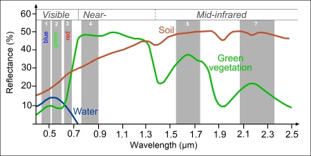

1 Introduction
1.1 Summary
1.1.1 Lecture Overview: What is Remote Sensing?
1.1.2 Electromagnetic Spectrum
The electromagnetic spectrum is made up of thousands of bands. From visible light, UV, Infrared, Radar, FM TV, short wave.

1.1.3 Resolutions of remote sensing images
Spatial: the size of the raster grid per pixel (cm/m). The smaller the measure the more detailed the image will be.
- Something like MODIS would have very high spatial data?
Spectral: The number of bands from the electromagnetic spectrum it is surveying. Often earth surfaces require multispectral data for it to form a true colour image.
- ie: green vegetation mainly requires red and near-infrared bands to detect, whereas soil requires mid-infrared bands (6 and 7) to be detected. Bodies of water can be detected mostly within visible light, RBGs.
- Landsat data surveys visible light, near infrared and short wave infrared.

Temporal: How frequently the data is collected. Often there is a direct trade off between pixel resolution and update frequency – higher the resolution, lower the update frequency. Good rm data is spenny!!
Radiometric: Able to identify difference in light or reflectance of Earth surface.
- The higher the bit, the higher the depth, the higher the ability to detect texture?

This shows applications of varying temporal and spatial resolution, what occasion it’s best for and what satellite provides that spatial resolution.An interesting point is RM data for emergency responses require fairly granular spatial resolution and frequent temporal resolution – so as to track minute changes in landscapes. However as mentioned above, there are direct trade offs between temporal and pixel resolution. For satellites to provide both high temporal and spatial resolution requires huge sums of cost and investment. With growing threats from the climate crisis on the urban landscape – do we currently have the capacity to effectively monitor damages and respond on time?
1.1.4 Factors influencing Electromagnetic waves
Florescence Polarization Bidirectional Reflectance Distribution Scattering Atmospheric
why things are useful, why you’d use this and not that in certain purposes as the image resolution and quality increase as well.
1.1.5 Practical: Landsat, Sentinel, QGIS, SNAP
1.2 Application
Since the emergence of accessible Landsat Satellite images in 1967, earth data have since been used for a wide range of purposes including tracking land use, urbanisation, drought, wildfires, biomass changes and other natural and human caused changes (USGS, nd). Most notably, our understanding of the Earth’s environmental systems has been drastically increased (Bretherton, 1988). Coupled with substantial environmental changes in recent decades, remote sensing data has allowed changes to be tracked and analysed over the last century. Sultana & Satyanarayana (2020) have used satellite imagery to assess the rate of urbanization and urban heat island intensities in urban India. Matricardi et al (2010) analysed the effects of tropical forest degradation as a result of logging and fire, and implemented policy recommendation accordingly. The Intergovernmental Panel on Climate Change stated Earth observing satellites as a critical and valuable tool to track changes and improving climate predictions (European Space Agency, 2021). Extensive reports using earth data includes measuring glacier and sea ice decline, sea level rise and climate modelling.
Our current understanding of the climate crisis would not be this advanced if satellite data were not publicly available. However this continues to highlight the lack of satellite imagery that satisfy all resolution, where temporal, spatial and spectral frequency are of the highest quality. Earth sensing data is vital in monitoring and predicting the health of our planet, surely more investment should be in this field its quality?